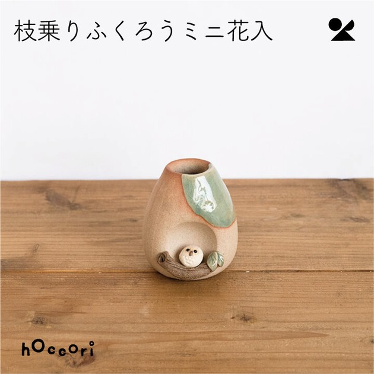
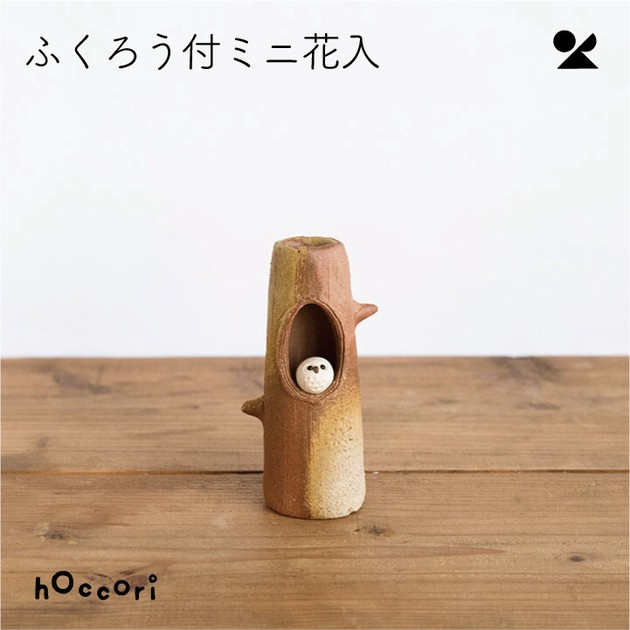
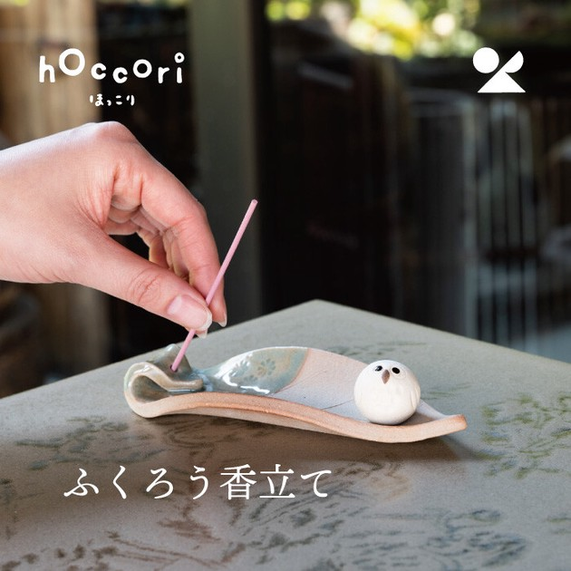

Shigaraki "Hoccori" Owl Set
4-Piece Miniature Healing Collection
€320.00
Price incl. VAT. Free shipping within the EU.
In Stock (Limited: 20 sets / month)
Find peace and tranquility with the "Hoccori" (Healing/Warming) Owl set, carefully crafted by the historic Meizan Kiln in Shigaraki. Hand-shaped from premium Shigaraki clay, this 4-piece collection includes three variations of miniature vases featuring lucky owls (symbols of wisdom and good fortune in Japan) and an adorable white owl incense holder. Beautifully textural and wabi-sabi.
Country of Origin: Made in Japan (Shiga Prefecture)
Materials: 100% Authentic Shigaraki Clay (Stoneware). Hand-fired at the Meizan Kiln.
Note: Due to the unpredictable nature of traditional kiln firing, the "Kaero" (fire color) and ash glaze effects on each piece will be unique and may differ slightly from the photographs.
Materials: 100% Authentic Shigaraki Clay (Stoneware). Hand-fired at the Meizan Kiln.
Note: Due to the unpredictable nature of traditional kiln firing, the "Kaero" (fire color) and ash glaze effects on each piece will be unique and may differ slightly from the photographs.
Free Shipping on all orders within the EU.
Estimated Delivery: 3–7 business days. Tracked, insured, and securely packaged to prevent ceramic breakage.
Estimated Delivery: 3–7 business days. Tracked, insured, and securely packaged to prevent ceramic breakage.
14-Day Return Policy (EU Consumer Rights)
You have the right to withdraw from this purchase within 14 days without giving any reason. We will reimburse all payments received from you, including the costs of delivery. Check items closely upon arrival.
You have the right to withdraw from this purchase within 14 days without giving any reason. We will reimburse all payments received from you, including the costs of delivery. Check items closely upon arrival.